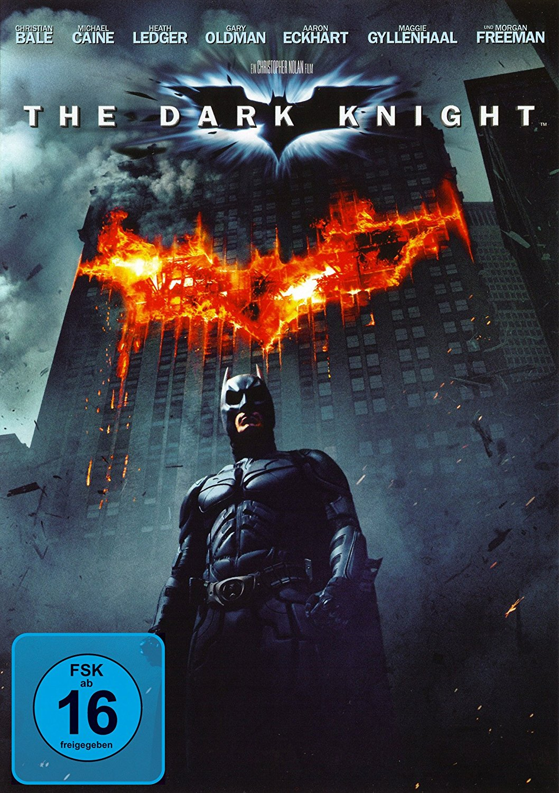
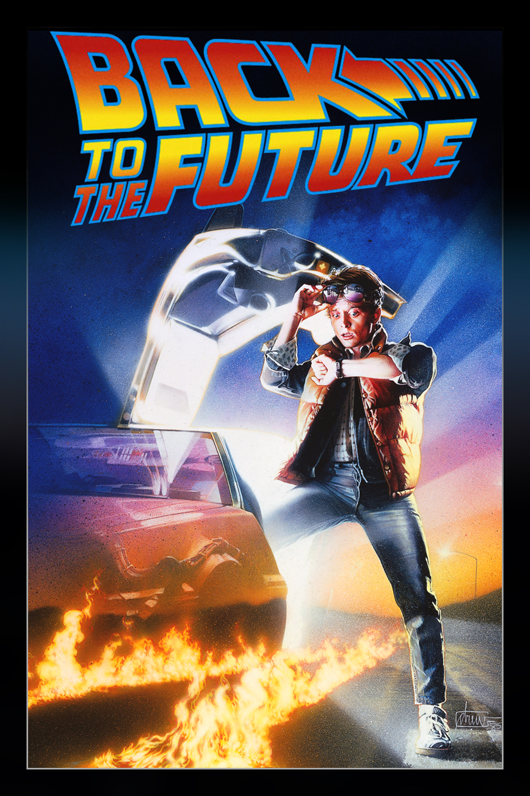
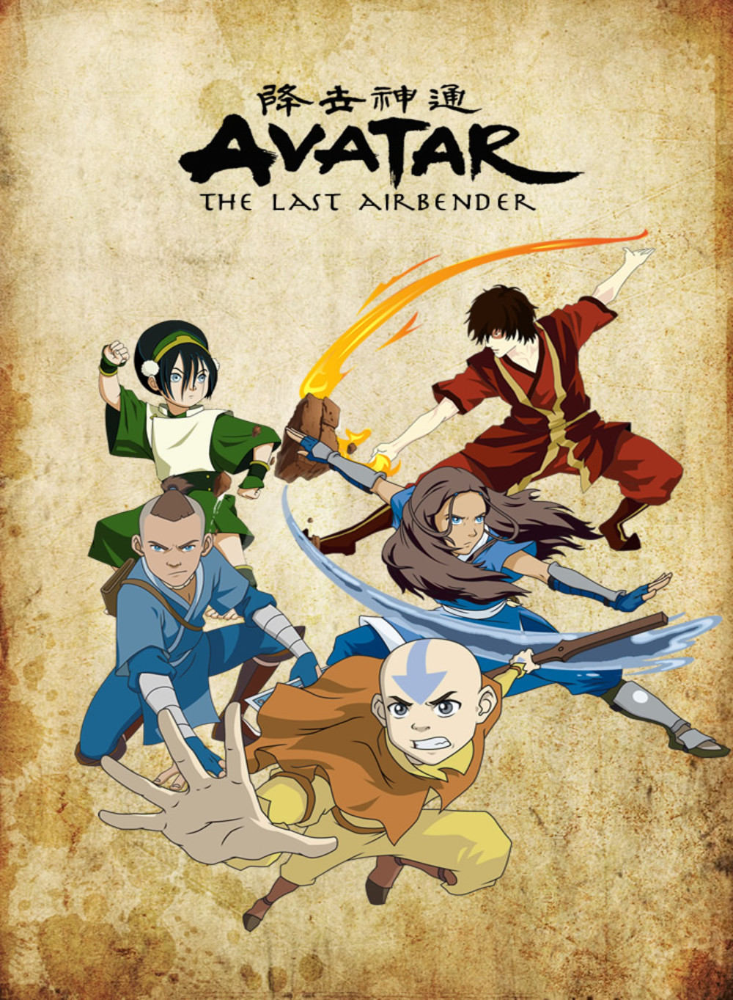

Autodidacte passionné, j'aime travailler avec les outils et logiciels de la suite Adobe. Je suis capable de m'adapter partout (sauf là où il n'y a pas de wifi...)
|  | The Dark KnightAvec l'appui du lieutenant de police Jim Gordon et du procureur de Gotham, Harvey Dent, Batman vise à éradiquer le crime organisé qui pullule dans la ville. |
|  | Retour vers le futur1985. Ami de l'excentrique professeur Emmett Brown, le jeune Marty McFly l'accompagne un soir tester sa nouvelle expérience : le voyage dans le temps. Marty se retrouve transporté en 1955. Là, il empêche malgré lui la rencontre de ses parents, et doit tout faire pour les remettre ensemble, sous peine de ne pouvoir exister... |
|  | Avatar, le dernier maitre de l'airAir, Eau, Terre, Feu : l'équilibre du monde bascule par une guerre sauvage engagée par la Nation du Feu contre les trois autres nations. Aang découvre qu’il est le nouvel Avatar, seul être capable de maîtriser les quatre éléments. Il s’allie à Katara, un Maître de l’Eau, et à son frère aîné Sokka... |